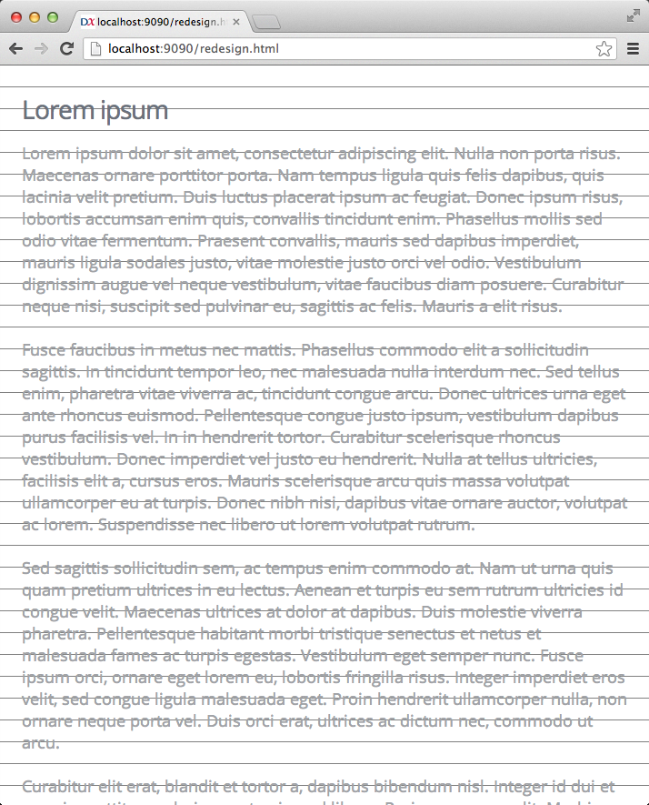

Drop in a baseline grid on any page, useful when designing typography for layouts.
Just drop mo-baseline-grid in your page:
<script src="mo-baseline-grid.js"></script>
Or pull it from GitHub:
<script src="http://bspaulding.github.io/mo-baseline-grid.js/mo-baseline-grid.js"></script>
This will default to a line-height of 32px. To customize the line-height, supply the data-line-height attribute:
<script src="mo-baseline-grid.js" data-line-height="24"></script>
The grid will take over your body's background image, looking something like this:
